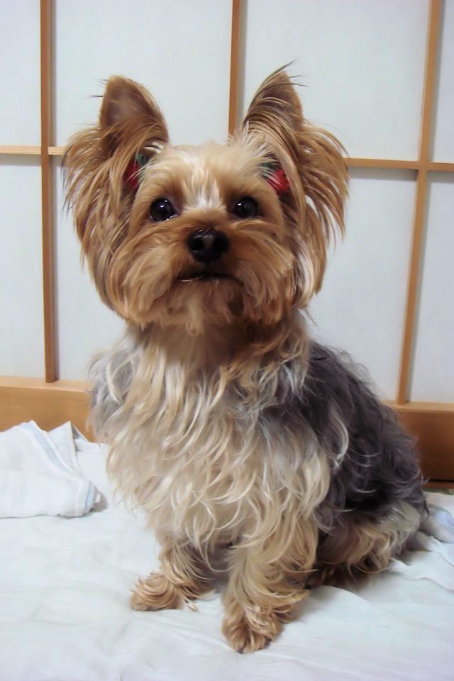
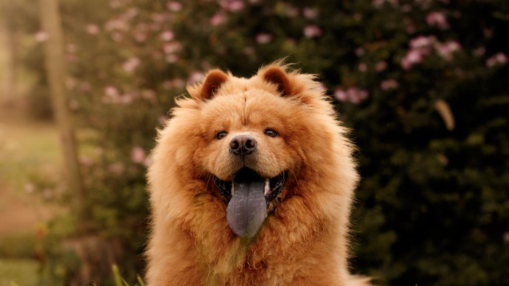

El San Bernardo es un perro de montaña poderoso, robusto y dotado de una gran inteligencia. Tranquilo, cariñoso con los niños y leal, es un compañero de vida sin igual. Es protector y prudente con desconocidos, pero jamás agresivo. Sus aptitudes lo convierten en el perro de búsqueda y rescate por excelencia.
Los San Bernardo son una de esas razas imposibles de confundir, con unas proporciones enormes y una gran altura. Son perros musculosos con cabezas grandes e imponentes y pueden recorrer terrenos abruptos con movimientos calmados y suaves. Esta raza se presenta en color anaranjado, caoba atigrado, rojizo atigrado o blanco con manchas de estos colores.
Tamaño:
Rango de peso:
Machos: 63 - 81 kg Hembras: 54 - 63 kg
Altura a la cruz:
Machos: 70 - 75 cm Hembras: 65 - 70 cm
Expectativas:
Nivel de Energía: Relajado Esperanza de vida: 8 - 10 años Tendencia a babear: alta Tendencia a roncar: moderada Tendencia a ladrar: baja Tendencia a excavar: Baja Volver al Inicio
Yorkshire terrier

De origen inglés y pequeñas dimensiones, el Yorkshire Terrier se caracteriza por ser una raza inteligente y con una fuerte personalidad. Su peso no suele superar los 3,2 Kg y, pese a entrar dentro de la categoría de perro de compañía, goza de un temperamento inquieto y muy activo.
Se aleja de lo que podría considerarse un perro “faldero”, llegando incluso a desarrollar comportamientos territoriales y cierta valentía cuando se cruza con perros de mayor tamaño.
Los cachorros de Yorkshire Terrier gozan de un pelaje abundante, fino y sedoso, cuya combinación de color negro, fuego y azul acero oscuro, los convierte en unos peludos adorables. Durante el primer año de vida necesitan canalizar su energía mediante el juego y los paseos diarios.
Tamaño:
Rango de peso:
Machos: 1 - 4 kg Hembras: 1 - 4 kg
Altura a la cruz:
Machos: 17 cm Hembras: 15 cm
Expectativas:
Nivel de Energía: Muy enérgico Esperanza de vida: 14 - 16 años Tendencia a babear: baja Tendencia a roncar: baja Tendencia a ladrar: alta Tendencia a excavar: Baja Volver al Inicio
Chow Chow

El Chow chow de pelo duro es un perro pequeño, compacto y cuadrado. Su cola se curva sobre el lomo. La parte interior de la boca y la lengua son de color azul/negro. Puede tener dos tipos de pelaje, duro o suave, y una amplia variedad de tonos (negro, rojizo, azul, beis, crema o blanco).
El chow chow es un perro distante que puede resultar algo terco. A veces se encariña tanto con una persona que puede ladrar si siente que su dueño o él están en peligro. Pueden parecer un osito de peluche, pero no lo son. Los criadores han mejorado su temperamento en los últimos años y se cree que muchos chow chow de mal carácter son así porque no han recibido entrenamiento o socialización de cachorros. Estos problemas pueden evitarse siempre y cuando se les presenten los niños, los gatos y demás mascotas cuando aún son jóvenes.
Tamaño:
Rango de peso:
Machos: 24 - 34 kg Hembras: 23 - 34 kg
Altura a la cruz:
Machos: 40 - 50 cm Hembras: 40 - 50 cm
Expectativas:
Nivel de Energía: Relajado Esperanza de vida: 10 - 12 años Tendencia a babear: Moderada Tendencia a roncar: De moderada a alta Tendencia a ladrar: Baja Tendencia a excavar: Baja Volver al Inicio